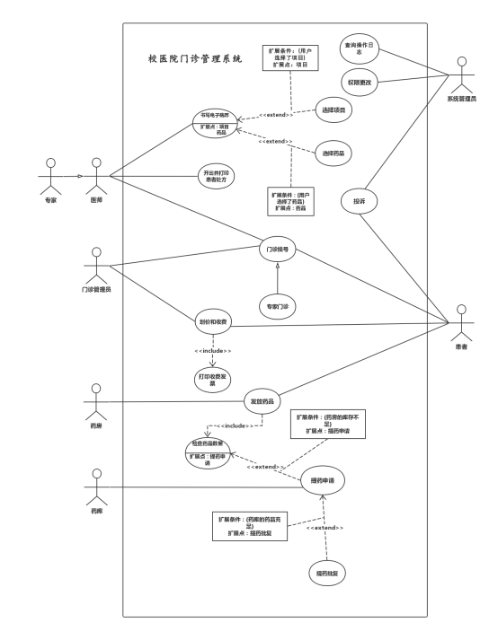
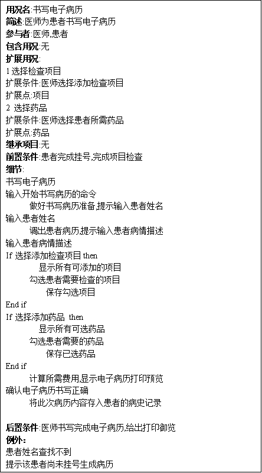
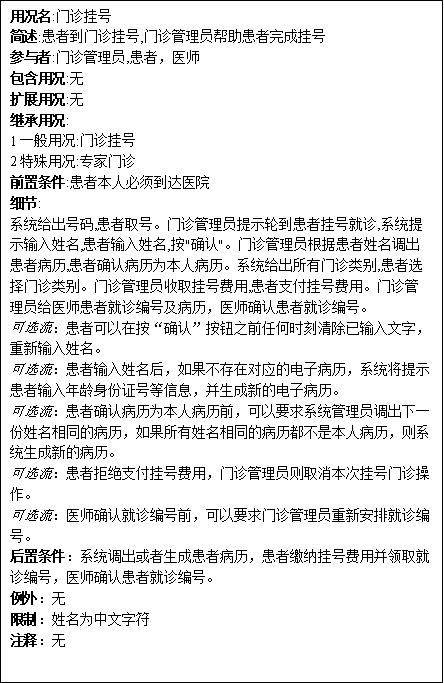
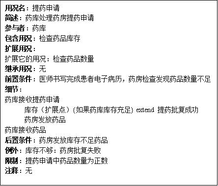
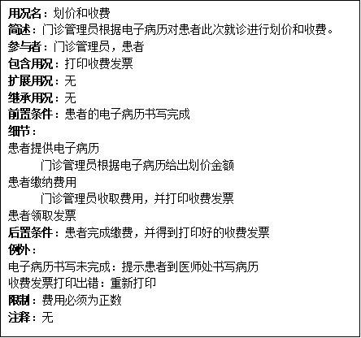
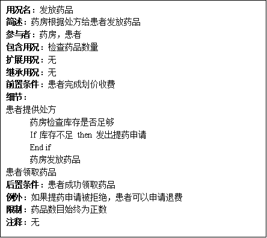

实验报告（用况图）
学生姓名：陈楚燚 学号：161830218
姜志杰 161830318
孙茜茹 161810101
王若凡 161810308
方丹枫 161820304
实验地点：计算机院楼104 实验时间：2019/11/8
一、 实验名称
校医院门诊管理系统用况图
二、 实验目的
使用UML为特定系统构建用况图
三、 实验内容与步骤
实验内容：
1.根据选题结果对所选课题进行细致、全面的面向对象需求分析；
2.对需求分析结果进行建模：使用UML建模工具，构建用况图；
3.针对用况图中体现的用况进行详细的用况描述。
实验步骤：
1.识别参与者：医师、专家、门诊管理员、药房、药库、患者、系统管理员；
2.捕获用况（根据题目要求、常识以及网上资料）；
3.识别参与者和参与者，用况与参与者之间的关系；
4.用况描述；
5.审查与调整；
四、 实验结果（模型截图+ 模型规约说明）






五、 分析与总结
最初，我们的用况包括了一个门诊，其中包含了书写电子病历，开处方等操作，经过讨论后发现此用况本身没有实际作用，具体功能就是子功能，因而决定删除此用况。在识别用况的过程中，最初根据题目要求，门诊分为医师门诊和病房门诊，但是通过查询资料发现门诊部挂号挂的就是医师门诊，医师会根据病人病情确定是否需要转入住院部，因而最终门诊挂号就是医师门诊，有一个继承为专家门诊。在审核的时候，发现缺少了系统管理员这个参与者，添加了系统管理员的用况：权限更改、查询操作日志和接受患者投诉。在处理药品药房和药库的提药相关操作时，涉及到了多层扩展，但是用况图要求尽量不要使用，因此删除了部分过于小的操作。
在审核和检查的时候需要查阅资料比对是否符合现实，没有描述系统内外交
互情况的用况需要删除（比如门诊用况）。每一个用况至少和一个参与者关联，用况之间关系连接导致的相连也算是与参与者关联。用况图应该尽量避免多层扩展操作。
在绘制用况图的过程，个人逻辑难免出现纰漏，所以需要队员们的brainstorming来纠错，以完善用况图。